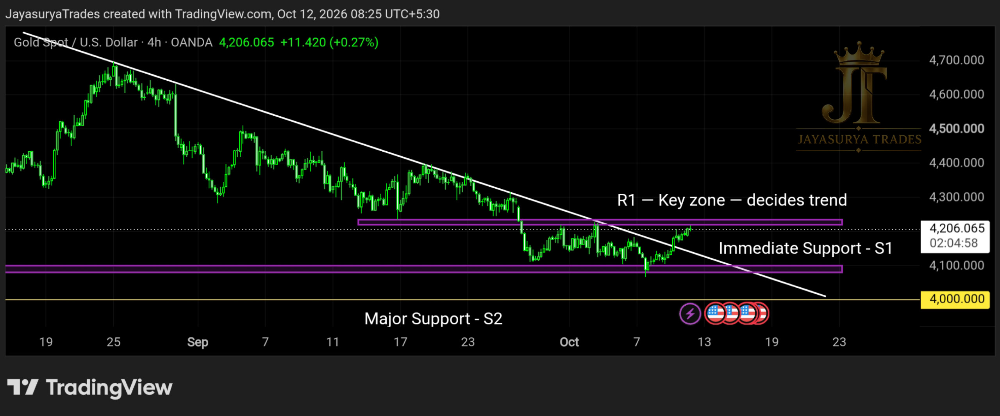
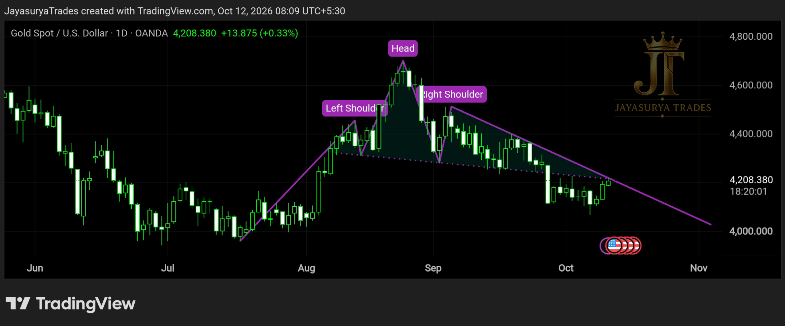

For this Monday Market Focus, I am analysing Gold (XAUUSD). The market has been forming a descending trendline pattern on the 4-hour timeframe. Price has now broken above this descending trendline with a candle close. From a market-structure perspective, this is an early signal of a possible bullish trend beginning to develop. However, a trendline breakout alone is not sufficient confirmation for every trader. The next important step is to watch how price behaves around the marked Resistance 1 (R1) level.
My focus this week is on whether Gold can sustain its breakout and close above R1 on the 4-hour timeframe. If that happens, it would provide stronger confirmation for the bullish scenario, and I would look for potential buy entries. Until then, the market remains at a decision point. Aggressive traders may consider the initial trendline breakout according to their own risk tolerance, while conservative traders should wait for further confirmation.
Timeframe: 4-hour chart
Current development: Descending trendline breakout with candle close
Key resistance: Marked R1 level — price value not specified
Major support: 4,000
Bullish confirmation: A 4-hour candle close above R1
Major bearish trend-change level: A confirmed break below 4,000

Chart 1 — The Four-Hour Descending Trendline Breakout
The first chart shows Gold breaking above the descending trendline pattern on the 4-hour timeframe, with a candle close above the trendline. This development signals a possible beginning of a bullish trend. However, the breakout is an early signal rather than complete confirmation of a sustained bullish trend.
The next level I am watching is Resistance 1 (R1), which I have marked on the chart. This is a crucial decision zone. If price breaks above R1 and a 4-hour candle closes above it, I would consider that stronger confirmation of the bullish scenario and start looking for potential buy entries.
For aggressive traders, the initial candle close above the descending trendline may offer an early opportunity to consider a buy setup, depending on their own risk appetite and trading plan. This approach carries the risk that price may fail to sustain the breakout. It is not the same as waiting for the more conservative confirmation above R1.
Chart 2 — Head & Shoulders Breakout and Market Indecision

As discussed in my previous analysis, Gold had broken downwards from the Head and Shoulders pattern. That breakout could potentially put downward pressure on the market. However, price has also broken above the descending trendline formed on the 4-hour timeframe.
These developments create a conflicting technical picture. The Head and Shoulders breakdown supports a possible bearish scenario, while the recent descending trendline breakout signals the possibility of a bullish trend developing. This is why I am not treating Gold as being in a confirmed sell trend at the moment.
If price closes back below the broken descending trendline on the 4-hour timeframe, the bullish breakout could weaken. Combined with the earlier Head and Shoulders breakdown, this could support a renewed bearish scenario. On the other hand, if price breaks above R1 and closes above it on the 4-hour timeframe, the bullish scenario would gain stronger confirmation.
Until one of these scenarios receives confirmation, my approach is to recognise that the market is at a decision point rather than force a directional trade. I will update the relevant entry conditions in a subsequent market analysis as price develops.
Major Support at 4,000 — The Important Downside Level
The 4,000 level is the major support area I have marked on the chart. If Gold fails to sustain its position above the broken descending trendline, price could potentially move towards this support level.
However, a failure to sustain the trendline breakout does not automatically establish a sell trend. The market could remain indecisive, and I would not treat a pullback towards 4,000 as sufficient reason to enter a sell trade. The market needs to provide clearer bearish confirmation.
A confirmed break below 4,000 would be a significant development in this analysis and could indicate a change towards a bearish trend. Until such a breakdown occurs, I will continue to treat this as a conditional scenario rather than an established outcome.
Above R1 with a 4-hour candle close: stronger bullish confirmation; potential buy setups can be considered.
Failure to sustain the trendline breakout: price could potentially move towards 4,000, but this alone is not a sell signal.
Below 4,000 with a confirmed breakdown: potential bearish trend-change scenario.
Short-Term Trading — Conservative vs. Aggressive Approach
Conservative Traders — Wait for R1 Confirmation
For short-term and intraday traders who prefer confirmation before entering, my approach is to wait for a 4-hour candle close above R1. If this breakout is confirmed, traders can then look for potential buy entries according to their own trading plan.
The initial trendline breakout is not the same as a confirmed bullish trend. Waiting for R1 confirmation may help traders avoid entering prematurely while the market is still deciding its direction.
Aggressive Traders — Early Breakout Scenario
Aggressive traders may consider a buy setup after the candle closes above the descending trendline on the 4-hour timeframe. This approach acts on the early breakout rather than waiting for R1 confirmation.
The risk is that price could fail to sustain the breakout and return below the trendline. Traders considering this approach should make their own assessment of risk, position sizing and invalidation conditions. An early breakout is a possible setup, not proof that the market has entered a sustained bullish trend.
When Should Traders Consider Selling?
At present, I am not treating the market's indecision as a confirmed sell trend. If Gold fails to sustain above the broken trendline, I would watch the subsequent price action rather than enter a sell trade automatically. The major support at 4,000 remains important, and a confirmed break below that level would be a significant bearish development in this analysis.
I will provide an updated assessment if the market develops a clearer bearish setup. Until then, the focus remains on waiting for confirmation instead of anticipating a breakdown.
Gold Investors — Considering Additional Purchases
For investors who purchased Gold earlier and are already holding a position, the recent break above the descending trendline may be a development worth monitoring. From my current chart perspective, the breakout creates a possible bullish scenario.
Investors considering adding to an existing holding may evaluate whether the current price suits their investment plan and financial circumstances. However, a trendline breakout alone does not establish that the current price is a good value or that adding to a position will be profitable. The possibility of a failed breakout and a move towards the 4,000 support level remains relevant.
Any decision to average into an existing position should take account of total exposure, available capital, investment horizon and the potential for further losses. Avoid increasing exposure solely because price has broken above a trendline.
The Two Main Scenarios I Am Watching
Bullish Scenario — Confirmation Above R1
Gold has already broken above the descending trendline on the 4-hour timeframe with a candle close. If price subsequently breaks above R1 and closes above it on the 4-hour timeframe, the bullish scenario would receive stronger confirmation. I would then look for potential buy entries in line with the confirmed market direction.
Aggressive traders may consider the earlier trendline breakout, but conservative traders can wait for the R1 confirmation. Both approaches carry risk, and neither guarantees that price will continue higher.
Bearish Scenario — Failed Breakout and Major Support
If Gold cannot sustain its position above the broken descending trendline, price could potentially move down towards the major support at 4,000. The previous Head and Shoulders downside breakout is also relevant to this scenario.
A return below the trendline would weaken the bullish case, but it would not by itself confirm a sustained sell trend. A confirmed break below 4,000 would be the more significant downside development identified in my current analysis.
Key Takeaways
- Gold has broken above the descending trendline on the 4-hour timeframe with a candle close.
- The trendline breakout signals the possibility of a developing bullish trend, but further confirmation is required.
- R1 is the key resistance zone to watch for stronger bullish confirmation.
- A 4-hour candle close above R1 would support looking for potential buy entries.
- Aggressive traders may consider the initial trendline breakout, while conservative traders can wait for R1 confirmation.
- The earlier Head and Shoulders downside breakout remains relevant to the potential bearish scenario.
- If price fails to sustain the trendline breakout, it could potentially move towards major support at 4,000.
- A failed trendline breakout alone does not confirm a sell trend.
- A confirmed break below 4,000 would indicate a significant potential bearish trend change.
- Investors considering averaging into existing Gold holdings should assess their exposure and risk rather than rely on the breakout alone.
For now, I am watching two important developments in Gold: whether the market can sustain its break above the four-hour descending trendline and whether it can close above R1. The earlier Head and Shoulders breakdown and the major support at 4,000 remain relevant to the alternative bearish scenario.
The market has not yet resolved these conflicting signals. Rather than assume the direction in advance, I will wait for the price action to provide the confirmation needed for the next decision.
Respect the key levels.
Wait for confirmation.
Manage risk before thinking about entries.
One day. One market. One focused analysis.
Levels. Structure. Scenarios. Confirmation.
No hype. Just how the market behaves.
Watch. Wait. Confirm.
Risk Disclaimer
This analysis is provided for educational and informational purposes only and should not be considered financial advice or a recommendation to buy or sell any financial instrument.
Trading involves substantial risk. Always conduct your own research and follow your own trading plan and risk-management rules.